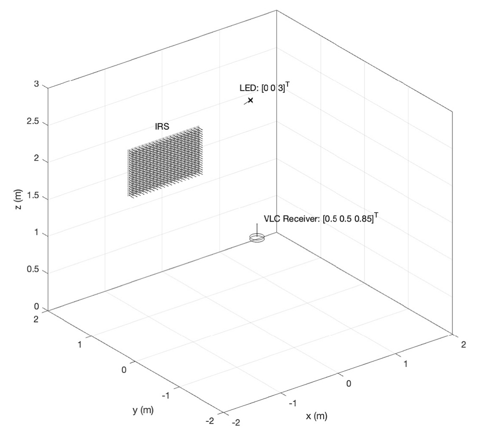
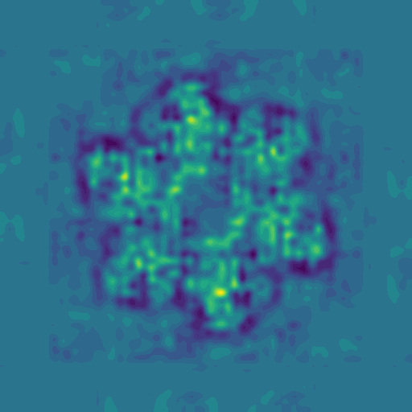

|
Efe Tarhan I am a Master’s student in Communication Systems at EPFL, supported by the Excellence Scholarship. My research interests are computer vision, foundational models, and 3D scene understanding. I am currently working in the Visual Intelligence and Learning Lab (VILAB) directed by Prof. Amir Zamir, under the supervision of Kunal Pratap Singh. Earlier, I worked in the Biomedical Imaging Group with Prof. Michaël Unser on multiresolution optimization and in the Image and Visual Representation Lab (IVRL) with Prof. Sabine Süstrunk on 3D scene editing. Before EPFL, I completed my B.Sc. in Electrical and Electronics Engineering at Bilkent University. During that time, I conducted research on visible light positioning under the supervision of Prof. Sinan Gezici for 2 years. ✉️ Email / 📃 CV / 🏛️ Scholar / 💻 Github |
{kind=link}
ResearchI have previous research experience in computer vision and detection and estimation problems. Currently I am interested in foundational models, multimodal data, 3D scene understanding, and diffusion models. |
|


|
IRS Aided Visible Light Positioning with a Single LED Transmitter
Efe Tarhan, Furkan Kökdoğan, Sinan Gezici Digital Signal Processing, 156, 2025 repository / paper A CRLB-based optimization technique of intelligent reflective surfaces for device localization using a single LED transmitter in indoor environments. |
|

|
Bolt3D: Generating 3D Scenes in Seconds
Stanislaw Szymanowicz, Jason Y. Zhang, Pratul Srinivasan, Ruiqi Gao, Arthur Brussee, Aleksander Holynski, Ricardo Martin-Brualla, Jonathan T. Barron, Philipp Henzler ICCV, 2025 project page / arXiv By training a latent diffusion model to directly output 3D Gaussians we enable fast (~6 seconds on a single GPU) feed-forward 3D scene generation. |


|
EVER: Exact Volumetric Ellipsoid Rendering for Real-time View Synthesis
Alexander Mai, Peter Hedman, George Kopanas, Dor Verbin, David Futschik, Qiangeng Xu, Falko Kuester, Jonathan T. Barron, Yinda Zhang ICCV, 2025 (Oral Presentation) project page / arXiv Raytracing constant-density ellipsoids yields more accurate and flexible radiance fields than splatting Gaussians, and still runs in real-time. |

|
Flash Cache: Reducing Bias in Radiance Cache Based Inverse Rendering
Benjamin Attal, Dor Verbin, Ben Mildenhall, Peter Hedman, Jonathan T. Barron, Matthew O'Toole, Pratul P. Srinivasan ECCV, 2024 (Oral Presentation) project page / arXiv A more physically-accurate inverse rendering system based on radiance caching for recovering geometry, materials, and lighting from RGB images of an object or scene. |
|
The source code of this website has been taken from here. |